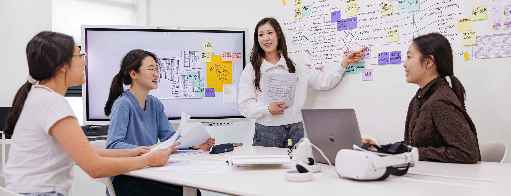
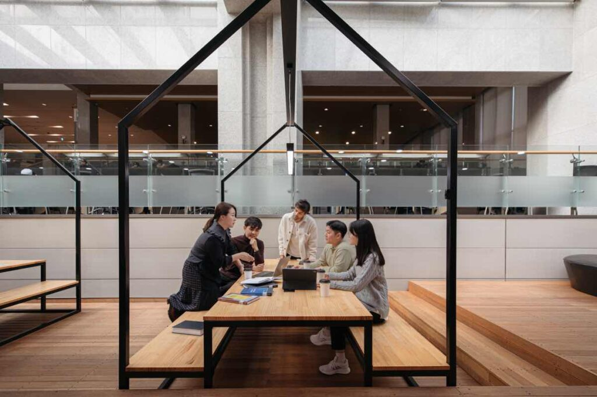
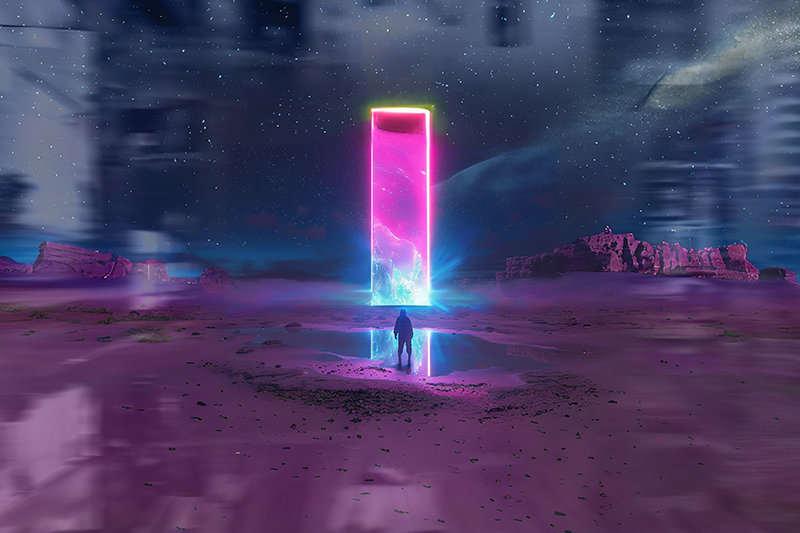

패션디자인연구실Fashion Design Laboratory
디지털 패션, 패션디자인, 패션일러스트레이션, 디자인 트렌드
Digital fashion, fashion design, fashion illustration, design trends.
통합디자인학과의 학부과정은 커뮤니케이션디자인(C), 패션디자인(F), 제품디자인(P)으로 구성된 디자인 전문 분야와 각 세부분야 간의 통합을 기반으로 뉴미디어와 테크놀로지, 서비스/시스템디자인, 디자인 경영, 디자인혁신 등으로 확장되는 차별적 통합디자인 교육시스템을 갖추고 있습니다.
The undergraduate program combines specialist fields—communication design (C), fashion design (F), and product design (P)—with integration across these disciplines. Its distinctive educational framework extends into new media and technology, service and systems design, design management, and design innovation.
통합디자인학과의 교과과정은 1학년에 통합디자인 개념의 이해, 디자인 기초 조형 원리 및 매체의 탐색을 통해 디자인 전문가가 갖추어야할 도전정신과 사고의 유연성을 기르는 것을 시작으로, 2학년에는 통합적 이론과 디자인리서치, 그리고 테크놀러지의 학습과 함께 세부 디자인 영역을 탐색하고 경험하면서 통합적 디자인의 범주에서 개인이 초점을 맞출 세부 디자인 영역을 선택하고 설계할 수 있도록 합니다. 또한, 3학년에는 학생이 선택한 세부 디자인 영역의 전문성을 강화하면서 이를 기반으로 보다 통합적 인재로 성장할 수 있는 통합디자인 프로세스 및 방법론을 경험하는 교과목으로 구성되어 있습니다. 4학년에는 심화된 디자인 역량과 통합적 디자인 접근법을 활용해 창의적이고 혁신적인 디자인 해결책을 찾고 제시하는 프로젝트형 교육과, 졸업 후 창업 및 관련 산업 진입에 필요한 실무 교과목을 통해 실천적 리더쉽을 갖춘 통합적 디자인 인재로 성장할 수 있도록 설계 되었습니다.
In the first year, students develop an understanding of integrated design, explore fundamental principles of form and design media, and cultivate the initiative and flexibility required of design professionals. In the second year, they study integrated theory, design research, and technology while exploring specialist fields, enabling them to choose and shape their own focus within integrated design. Third-year courses strengthen expertise in the selected field and introduce integrated design processes and methods that support broader professional growth. In the fourth year, project-based education combines advanced design skills with integrated approaches to propose creative and innovative solutions. Practical courses prepare students for entrepreneurship and industry careers, helping them become integrated design professionals with practical leadership skills.
또한, 통합디자인학과는 통합적이고 융합적인 역량외에도, 학생들이 디자인 세부 분야의 전문성을 갖출 수 있는 커뮤니케이션디자인, 패션디자인, 제품디자인, AI기반통합디자인의 심화전공제도 운영을 통해, 학생 맞춤형의 다양한 교육 기회를 제공하는 시스템을 갖추고 있습니다.
In addition to integrated and interdisciplinary capabilities, the department offers advanced major tracks in communication design, fashion design, product design, and AI-based integrated design. These tracks provide a range of personalized educational opportunities that build expertise in specific design fields.

과목명을 선택하면 설명을 확인할 수 있습니다.
인간을 중심으로 전개되는 디자인학문의 폭넓은 이해를 위하여 디자인의 기초이론 및 다양한 디자인 영역별 특성 및 현대디자인의 흐름을 학습한다.
Introduction to Integrated Design
Students study fundamental design theories, the characteristics of different design disciplines, and contemporary design trends to develop a broad understanding of design as a human-centered field.
2D 그래픽 툴(일러스트레이터, 포토샵, 인디자인 등)을 이용하여 다양한 표현기법 및 디자인 방법을 탐색하고 실험하는 것을 목표로 하며, 프로젝트를 진행을 통해 실제 디자인 작업에 적용하는 능력을 개발한다.
2D Digital Design
Students explore and experiment with expressive techniques and design methods using 2D graphics tools such as Illustrator, Photoshop, and InDesign. Projects develop their ability to apply these tools in practical design work.
인체와 사물의 관찰을 통한 대상의 특성을 분석하고 이를 시각적으로 표현하며, 다양한 조형 활동을 통해 대상을 해석하는 기초 능력을 함양한다.
Observation and Expression
Through observation of the human body and objects, students analyze and visually express their characteristics. A range of form-making activities develops foundational skills in interpreting subjects.
전통적, 실험적 디자인 소재를 탐색하고, 다양한 소재를 활용한 조형 활동을 통해 디자인 조형의 기초적 접근 방법을 학습한다. 조형 요소 및 구성 원리를토대로 2차원과 3차원을넘나들며 조형 작업의 폭을 넓힐 수있는 다양한 프로젝트를 수행한다.
Design Materials and Form
Students explore traditional and experimental design materials and learn fundamental approaches to form-making through material-based activities. Projects grounded in design elements and composition principles expand their practice across two and three dimensions.
점, 선, 면, 형태, 질감, 색채 등 디자인의 요소와, 통일, 대비, 리듬, 균형 등 구성의 원리를 탐구하고, 실습 프로젝트를 통하여 다양한 매체에서의 시각 커뮤니케이션을 위한 메시지 표현방법과 이에 따른 기초 커뮤니케이션 능력을 배양한다.
Fundamentals of Communication Design
Students explore design elements such as point, line, plane, form, texture, and color, along with composition principles including unity, contrast, rhythm, and balance. Practical projects develop foundational communication skills and methods for expressing visual messages across media.
인체의 비례 및 소재의 특성에 따른 패션 일러스트레이션의 다양한 표현기법을 학습한다. 다양한 매체활용을 토대로 패션디자인 및 패션이미지의 특성에 따른 창의적인 표현방법을 실습한다.
Fashion Imagery and Illustration
Students learn fashion illustration techniques in relation to human proportions and material characteristics. They practice creative expression suited to fashion designs and images using a range of media.
제품 디자인의 원리와 조형 요소, 그리고 사용자에 대한 이해를 바탕으로, 다양한 제품을 기획 및 디자인하고 제작하는 과정을 통하여 제품 디자인의 기초 기술들을 연마한다.
Fundamentals of Product Design
Students develop fundamental product design skills through planning, designing, and making products, grounded in an understanding of design principles, form-making elements, and users.
20세기 현대 디자인을 역사적으로 조명하고 각 디자인 분야의 사례를 통하여 사회문화적 환경의 변화와 디자인의 관계성 및 의미를 탐구한다.
History of Modern Design
Students examine twentieth-century modern design from a historical perspective. Examples from different design disciplines reveal the relationship between sociocultural change and the meanings of design.
색채이론과 실습을 통하여 색채의 특성을 이해하고 색채감성을 습득함으로써 다양한 디자인 분야에서 색채를 효과적으로 활용할 수 있는 능력을 키우며 색채를 통해 표현된 문화적 상상력을 탐구한다.
Light and Color Design
Color theory and practice help students understand color characteristics and develop sensitivity to color. They build the ability to use color effectively across design fields and explore the cultural imagination expressed through color.
커뮤니케이션 도구인 문자의 조형과 기능에 대한 이론적 학습을 바탕으로, 정보와 이미지의 성격에 따라 변화하는 타이포그래피의 기능을 이해하고, 정보표현수단으로서의 타이포그래피를 다양한 시각전달 매체에 활용하기 위한 디자인을 실습한다.
Typography Design
Through the study of letterforms and their functions as communication tools, students learn how typography responds to the nature of information and images. They practice using typography to express information across visual media.
패션디자인의 기초 이론과 디자인 발상에서부터 패턴 메이킹, 원단, 부자재의 선정 및 의복 제작에 필요한 기법을 탐구하고, 창의적인 패션디자인을 개발하고 제작하는 과정을 통하여 패션디자이너가 갖추어야 할 기초능력을 함양한다.
Fashion Construction Techniques
Students study fundamental fashion design theory, ideation, patternmaking, fabric and trim selection, and garment construction. Developing and producing creative fashion designs builds the foundational skills required of fashion designers.
디지털 환경에서 제품을 설계하는 과정 및 방법과 프로토타이핑하는 기술을 배우기 위한 프로젝트 중심의 교육으로 3D CAD, 프로토타이핑 기술을 활용하는 능력을 기른다.
3D Digital Design
This project-based course teaches product design processes in digital environments and prototyping techniques, developing proficiency in 3D CAD and prototyping technologies.
아이디어를 도출하고 발전시켜 상품화에 이르는 디자인 기획의 과정과 방법들을 이해하고, 이를 바탕으로 프로젝트를 진행하여, 통합 디자이너로서 필요한 혁신적 디자인 기획 능력을 배양한다.
Design Research
Students learn design planning processes and methods from generating and developing ideas to commercialization. Projects cultivate the innovative planning abilities required of integrated designers.
미래의 디자인과 서비스는 점차 통합화, 비물질화 되어가고 있으며, 무형의 형태로 존재하는 사람과 환경의 다양한 상호작용, 그 리고 그것이 만들어 내는 서비스는 새로운 디자인의 대상이 되고 있다. 이러한 환경변화에 대한 이해를 바탕으로, 사용자와 상호 작용이 가능한 제품 및 서비스를 기획하여 구체화하고 제작할 수 있는 능력을 기른다.
Interaction Design
As design and services become increasingly integrated and dematerialized, intangible interactions between people and their environments—and the services they create—are becoming new subjects of design. Students develop the ability to plan, realize, and produce interactive products and services in response to these changes.
브랜드의 이론 및 실습을 통해 종합적 브랜드 디자인을 배우고, 실제 사회적 니즈의 조사에 기반한 새로운 브랜드의 기획과 정확한 브랜드 커뮤니케이션을 위한 아이덴티티 디자인 및 미디어를 활용한 커뮤니케이션 디자인을 배운다.
Brand Design
Students learn comprehensive brand design through theory and practice. Research into real social needs informs new brand planning, identity design for accurate brand communication, and communication design across media.
시대적 특성 및 사회적 문화적 배경에 따라 형성되는 미 개념에 관한 강의를 통해 디자인을 이해하고 평가하는 능력을 기른다.
Design Aesthetics
Lectures on concepts of beauty shaped by historical, social, and cultural contexts develop students’ ability to understand and evaluate design.
다양한 디자인 관련 의사 결정에 이루어질 수 있는 데이터 수집, 처리, 시각화 방법을 실습해보고 이를 바탕으로 제품, 패션, 커 뮤니케이션 디자인 등 다양한 영역의 새로운 디자인 및 마케팅, 서비스 등을 기획하는 데에 활용해 본다.
Data-Based Integrated Design Research
Students practice collecting, processing, and visualizing data for design decisions. They apply these methods to planning new designs, marketing, and services in product, fashion, communication design, and other fields.
사진, 비디오, 컴퓨터와 같은 영상매체로 표현되는 이미지, 동영상, 애니메이션, 컴퓨터 애니메이션 등의 다양한 영상디자인의 기본 원리와 지식을 습득하고 이를 다양한 매체로 응용하는 표현방법을 실습 프로젝트를 통해 탐구하는 등 2차원과 3차원 조형에 시간의 차원을 더한 영상조형 즉 4차원 조형형성 능력을 배양한다.
Interactive Media Design
Students learn principles of moving-image design, including images, video, animation, and computer animation produced through photographic, video, and computer media. Practical projects explore expression across media and develop four-dimensional form-making by adding time to two- and three-dimensional composition.
디지털패션커뮤니케이션 교과목은 현대 패션 산업에서 디지털 기술과 커뮤니케이션의 결합을 통해 패션브랜드의 홍보 및 커뮤니 케이션 컨텐츠 개발을 위한 패션 브랜드 커뮤니케이션의 이론과 주요 미디어 및 디지털 플랫폼의 특성과 활용 전략을 학습하고, 패션 브랜드의 커뮤니케이션을 위한 실무 전략을 기획 및 적용하는 기회를 제공한다.
Digital Fashion Communication
This course explores fashion brand communication through the combination of digital technology and communication in the contemporary fashion industry. Students study theory, major media, digital platforms, and application strategies, then plan and implement practical communication strategies for fashion brands.
제품 기획에서 상품화에 이르는 디자인 프로세스의 이해를 바탕으로, 창의적이고 실험적 개념의 제품을 기획하고 디자인하여 상 품화할 수 있는 능력과 실행 기술을 연마한다.
Product Design Process
Students learn the design process from product planning to commercialization, developing the skills to plan, design, and bring creative and experimental product concepts to market.
정치ᆞ경제, 사회ᆞ문화의 변천에 따른 시대의 패러다임과 메가트렌드를 탐구하고, 소비트렌드, 라이프스타일의 변화와 다양한 디자인 영역과의 관련성을 분석하여 미래의 디자인 트렌드를 예측하고 기획한다.
Design Trends
Students explore paradigms and megatrends arising from political, economic, social, and cultural change. By analyzing consumer trends, changing lifestyles, and their relationships to design fields, they forecast and plan future design trends.
통합디자인의 기본 개념과 적용 방안 이해를 바탕으로, 통합적 관점에서의 디자인 프로젝트를 기획하고, 이를 바탕으로 제품, 패션, 커뮤니케이션 디자인 등 다양한 영역의 디자인 및 마케팅, 서비스 등을 설계한다.
Systems Thinking and Integrated Design
Building on an understanding of integrated design concepts and applications, students plan projects from an integrated perspective and develop designs, marketing, and services across product, fashion, communication design, and other fields.
인간과 사물 사이의 관계를 이해하고, 서로 소통이 가능하게 하는 인터페이스 디자인을 이해하고, 다양한 제품, 시스템에 응용하고 실습한다.
User Experience and Interface Design
Students explore relationships between people and objects and learn interface design that enables communication between them. They apply and practice these approaches in a range of products and systems.
심화된 패션디자인 방법론을 배우고, 창의적 패션디자인 개발 및 패션디자인의 발산적 방법을 실습한다. 이를 토대로, 차별적인 패션디자인 컨셉을 기획하고 자신만의 디자인 컬렉션을 구성, 발전시킬 수 있도록 한다.
Fashion Design and Business
Students learn advanced fashion design methods and practice creative development and divergent approaches. They use these skills to plan distinctive concepts and develop their own design collections.
제품디자인 프로젝트 기획부터 양산 과정까지의 과정을 다룬다. 학생들은 제품 설계, 디자인 목업 제작, 양산성 검토, 지속가능성 검토 및 제품 디자인 디테일 과정을 거치면서 실무레벨의 프로젝트를 경험한다.
Product Design Studio
This course covers product design from project planning to mass production. Students experience professional-level projects through product engineering, mockup production, assessments of manufacturability and sustainability, and detailed product design.
X로 지칭되는 오픈된 토픽에 대하여 통합적 접근을 통해 창의적이고 혁신적인 문제해결 방법을 모색하는 것을 목표로, 디자인사 고를 기반한 통합적 디자인 프로세스를 경험해본다.
Design X 1
Students experience a design-thinking-based integrated design process, exploring creative and innovative solutions to open topics represented by “X.”
X로 지칭되는 오픈된 토픽에 대하여 통합적 접근을 통해 창의적이고 혁신적인 문제해결 방법을 모색하는 것을 목표로, 디자인사 고를 기반한 통합적 디자인 프로세스를 경험해본다.
Design X 2
Students experience a design-thinking-based integrated design process, exploring creative and innovative solutions to open topics represented by “X.”
X로 지칭되는 오픈된 토픽에 대하여 통합적 접근을 통해 창의적이고 혁신적인 문제해결 방법을 모색하는 것을 목표로, 디자인사 고를 기반한 통합적 디자인 프로세스를 경험해본다.
Design X 3
Students experience a design-thinking-based integrated design process, exploring creative and innovative solutions to open topics represented by “X.”
디자인 리더로 성장할 수 있도록 디자인 관점에서 비즈니스 모델을 수립하는 방법을 비즈니스 환경 전반에 대한 이해, 디자인경영 이론, 디자인 사고, 전사적 맥락 분석과 심층 소비자 연구를 바탕으로 새로운 비즈니스 기회와 독특한 소비자 경험 전략을 포착 및 창출 방법의 등의 학습을 통해 탐구한다.
Design Business
Students learn to establish business models from a design perspective and grow as design leaders. Studies of business environments, design management, design thinking, organizational context, and in-depth consumer research help them identify and create new business opportunities and distinctive consumer experiences.
통합디자인적 마케팅 활동인 V.M.D.의 목적 및 프로세스를 이해하고 상품기획 및 판매 전략에 따른 상업공간에서의 V.M.D.요소를 기획, 실습한다.
Visual Merchandising
Students learn the purposes and processes of visual merchandising (VMD) as an integrated design marketing activity. They plan and practice VMD elements in commercial spaces in line with merchandise planning and sales strategies.
포트폴리오의 완성도를 높이고, 프레젠테이션 기법 학습 및 실무 현황 탐색 등을 통해 실무 진출을 위한 준비를 하는 것을 목표로 한다.
Professional Practice
Students prepare for professional practice by refining their portfolios, learning presentation techniques, and exploring current industry practice.
커뮤니케이션디자인 분야의 전공심화 교과목이다. 본 교과목에서는 시각이미지통합을 위한 디자인 프로젝트를 자유롭게 수행하며, 졸업 후 진로를 위한 포트폴리오를 준비한다.
Communication Design Studio
This advanced communication design course allows students to undertake independent projects integrating visual images and prepare portfolios for their careers after graduation.
디지털 패션디자인 역량 강화를 위해, 가상성 기반 디지털 툴(Virtual Fitting System)을 이용한 다양한 패턴디자인 방법과 패션디자인 개발 방법을 학습함. 창의적 패턴디자인을 통한 디지털 패션디자인 분야의 기초 지식을 습득한다.
Digital Pattern Design
Students strengthen digital fashion design capabilities by learning pattern design and fashion development using virtual fitting systems. Creative pattern design builds foundational knowledge in digital fashion design.
4차 산업시대에서 디자인의 영역이 사회, 문화, 정치적인 ‘사악한’문제로 확장됨에 따라, 미래 시나리오, 비판적 디자인, 디자인 픽션, 미래예측 디자인 등의 다양한 디자인 방법론을 학습한다. 이를 통해 현재의 기술과 문화적 흐름을 기반으로 미래를 예측하는 것뿐만 아니라, 이러한 흐름에 변화를 일으키고 새로운 방향을 제시하는 디자이너를 양성한다.
Speculative Design
As design expands to social, cultural, and political “wicked problems” in the era of the fourth industrial revolution, students study methods such as future scenarios, critical design, design fiction, and speculative design. They learn both to anticipate futures based on current technological and cultural trends and to influence those trends and propose new directions.

통합디자인학과 대학원은 인간중심의 통합적 디자인 관점을 기반으로 빠르게 변화하는 디자인 지식의 생산과 확산에 기여할 수 있는 인재 양성을 목표로 합니다. 본 과정의 학생들은 다양한 심화 교과, 통합분야의 교과를 학습하고 연구 프로그램에 참여함으로써 기존 디자인 학문과 연구의 패러다임을 넘어서는 새로운 디자인 영역의 가능성에 대해 탐구하고 독자적인 연구자로서 성장할 수 있습니다.
The graduate program aims to nurture professionals who contribute to the production and dissemination of rapidly evolving design knowledge through a human-centered, integrated perspective. Advanced and interdisciplinary courses and research programs enable students to explore new design fields beyond established academic and research paradigms and develop as independent researchers.
통합디자인학과 대학원의 교과과정은 커뮤니케이션디자인, 패션디자인, 제품/서비스디자인, 디지털디자인, 그리고 인간생애와혁신적디자인의 세부 전공을 심화하면서 통합분야 교과와 연구를 통해 인간 중심의 통합적 디자인 접근에 대한 이해를 높이고 영역을 넘나드는 융합적 인재로 성장할 수 있도록 설계되어 있습니다.
The graduate curriculum develops specialist expertise in communication design, fashion design, product and service design, digital design, and Human Life and Innovation Design. Integrated courses and research deepen understanding of human-centered design and support interdisciplinary growth across these fields.
Communication Design: Explore strategies, information design, user experience, design methods, and presentation techniques for effective communication across print, digital, spatial, and new media in branding, exhibitions, education, entertainment, and other contexts.
Fashion Design: Study fashion as an expression of the aesthetics, technologies, cultures, and values of individuals, societies, and eras. Research examines contemporary fashion design and industry, future changes in design, and opportunities for industry expansion.
Product and Service Design: Research products, services, and systems that create ecological, social, and economic value, as well as design for sustainable behavior.
Digital Design: Explore the scientific development and expansion of design through artificial intelligence and new media technologies such as VR and AR.
Human Life and Innovation Design: This interdisciplinary major, jointly offered with the Department of Child and Family Studies in the College of Human Ecology, trains design professionals to support social innovation across stages of human life.
통합디자인학과 대학원 과정은 차별화된 교육프로그램의 제공 외에도, 학술연구와 발표, 연구역량을 배양할 수 있는 세미나, 다양한 정부 및 기업 등과의 협업 프로젝트도 활발하게 이루어지고 있어, 전문 연구자로서 성장할 수 있는 다양한 기회를 제공하고 있습니다.
Beyond its distinctive curriculum, the graduate program offers academic research and presentation opportunities, seminars that build research capabilities, and active collaborative projects with government agencies and companies, supporting students’ development as professional researchers.


필수·통합·전공선택 교과목을 분야별로 살펴보세요. 과목명을 선택하면 설명이 나타납니다.
디자인 실무 및 디자인학 연구의 최근 이슈와 동향을 파악하여 통합디자인의 관점에서 연구/프로젝트를 진행한다.
Integrated Design Planning and Projects
Students identify current issues and trends in design practice and research, then undertake research or projects from an integrated design perspective.
디자인 연구방법론을 논하고 실제 생활디자인 연구사례들에서 사용된 방법에 대해 토의, 비평한다.
Research Methodology 1
Students discuss design research methodologies and critically examine methods used in actual human environment and design research.
디자인과 타 분야 (심리학, 경영학, 기술, 과학) 간의 다학제적인 연구들을 확인하고 앞으로의 발전 가능성을 살펴본다
Integrated Design Research
Students examine interdisciplinary research connecting design with psychology, management, technology, and science, and explore opportunities for future development.
디자인 연구방법론을 논하고 실제 통합디자인 연구사례들에서 사용된 방법에 대해 토의, 비평한다.
Research Methodology 2
Students discuss design research methodologies and critically examine methods used in actual integrated design research.
정성적으로 판단, 평가하는 인간의 감성을 정량화시켜 공학적 기법을 이용하여 디자인 작업에 이용하고자 하는 것으로 감성공학이 무엇이며 디자인 작업에서 어떻게 이용하는가를 이해하며 학습한다.
Emotion Science and Design
Students learn how emotional engineering quantifies human emotions that are often assessed qualitatively and applies engineering techniques to design practice.
디자인산업의 발전방안과 국가적 경쟁력을 기르기 위한 방안을 경영학적 관점에서 강의하고 연구한다.
Design Management
Lectures and research examine the development of the design industry and ways to strengthen national competitiveness from a management perspective.
다양한 디자인 분야에서 외현적으로 표출되는 형태적 특성을 의미있는 기호로서 파악하는 기호학 이론을 강의하고 실제 사례를 탐구하여 실증적으로 연구한다.
Design and Semiotics
Students study semiotic theories that interpret visible formal characteristics in design as meaningful signs and examine real cases through empirical research.
디자인적 관점에서 소비자의 욕구를 철저히 조사, 탐지하여 그것을 신제품개발에 반영시켜 소비자가 원하는 상품을 시장에 제공하고 판매촉진을 일으켜 소비자의 만족을 통하여 기업의 이윤추구를 위한 기업활동이다. 이는 시장의 변화로 마케팅 개념이 세분화된 것으로 디자인마케팅의 개념과 방법을 연구한다.
Design and Marketing Strategy
Students research design marketing concepts and methods: investigating consumer needs, incorporating them into product development, and promoting sales through products that satisfy consumers and support business profitability. The course considers the specialization of marketing in response to changing markets.
지역적 문화 정체성을 담고 있는 디자인의 상징적 의미를 탐구한다.
Comparative Studies in Design Culture
Students explore the symbolic meanings of design that express regional cultural identity.
생활을 해석하고 재창조하는 문화로서의 디자인의 중요성과 역할에 대하여 강의하고 연구한다.
Design Culture Studies
Lectures and research explore the importance and role of design as a culture that interprets and recreates everyday life.
철학적, 문화적 이론을 배경으로 한 미적 개념을 연구하고 창의적 조형활동을 위한 이론적 강의를 한다.
Advanced Design Aesthetics
Students study aesthetic concepts grounded in philosophical and cultural theories, developing a theoretical foundation for creative form-making.
디자인의 방법에 대하여 연구하고 창조적 디자인 개발과 디자인 프로세스의 학습을 한다.
Design Methodology Research
Students research design methods and learn creative design development and design processes.
메가 트랜드, 라이프 스타일과 관련된 트랜드를 조사 분석하고 이를 토대로 특정한 주제 하에 기획실습한다.
Design Trend Research
Students investigate and analyze megatrends and lifestyle trends, then apply their findings to planning exercises around a specific theme.
저작권법, 문예진흥법, 환경조형물설치법, 판매와 유통에 관한 법, 미술관 관련 법 등 디자인에 관련된 각종 법에 대한 연구를 한다.
Design Administration
Students research laws related to design, including copyright, arts promotion, environmental sculpture installation, sales and distribution, and museums.
기업, 사회적 혁신을 위한 디자인리더쉽의 의미와 역할을
연구한다.
Design Innovation and Leadership
Students study the meaning and role of design leadership in business and social innovation.
소비자가 원하는 상품이나 서비스를 제공하기 위한 머천다이징을 판매현장에서 시각화하는데 필요한 이론과 사례를 강의한다.
Advanced Visual Merchandising
Lectures examine theories and cases of visualizing merchandising at the point of sale to provide products and services that meet consumer needs.
인간생애 특성에 따른 서비스디자인을 현장 인턴쉽과 연계하여 습득한다.
Social Design and Internship
Students learn service design tailored to stages of human life through field internships.
문화적, 역사적 변천에 따른 색채의 특성과 적용에 대해 논의하고 이를 토대로 특정 주제와 관련하여 연구한다.
Color Science and Cultural Studies
Students discuss color characteristics and applications across cultural and historical changes, then conduct research around a selected theme.
조형예술에 대한 이론들을 작품의 사례연구를 통하여 철학적, 미학적, 사회학적 측면으로 연구, 조명한다.
Advanced Studies in the Visual Arts
Students examine theories of the visual arts through case studies of artworks from philosophical, aesthetic, and sociological perspectives.
모더니즘 이후의 디자인 사조를 분석하고 시대별 사회문화적 특성과 분야별 디자인 특성의 상호작용과 변화요인을 고찰하고 연구한다.
Contemporary Design Theory
Students analyze design movements after modernism and examine interactions between sociocultural conditions and design characteristics across periods and fields, including the factors that drive change.
브랜드디자인은 기업이나 국가 단체 개인 등의 타와 구별되는 해당 단체 및 개인 만의 개성과 특성을 기획, 조직하고 표현하는 디자인이다. 브랜드는 기업의 경영구조 및 이를 아우르는 사회전반의 트렌드 변화에 대응하여 끊임없이 변화하고 있다. 본 교과목에서는 브랜드 디자인의 사례와 연구논문을 조사분석하여 발표와 토론을 통해 고찰하며, 브랜드 디자인에 대한 종합적인 학습을 기반으로 디자인프로젝트와 디자인연구를 수행을 통해 아이덴티티 디자인 전문가로서의 능력을 배양한다.
Brand Design Research
Brand design plans, organizes, and expresses the distinctive characteristics of companies, nations, organizations, and individuals. Brands continually evolve with changes in business structures and wider social trends. Students analyze cases and research papers through presentations and discussions, then conduct design projects and research to develop expertise in identity design.
디자인학의 연구 분야 중 커뮤니케이션디자인 관련 연구를 진행한다. 이를 위하여 우수연구논문의 심층리뷰를 학습하며 본인의 연구이슈를 발견하고, 이에 맞는 연구설계와 연구방법을 설계하여 실제적 연구를 진행한다. 이러한 학습의 과정을 통해 커뮤니케이션디자인 분야의 학문적 연구자로서의 능력을 배양한다.
Communication Design Research
Students conduct communication design research through in-depth reviews of leading research papers, identify their own research questions, design suitable studies and methods, and carry out practical research. This process develops their capabilities as academic researchers in communication design.
이미지와 언어에서는 정보의 정확한 전달을 위해 언어의 기능을 하는 이미지에 대한 분석연구를 한다. 또한 다양한 미디어의 발달에 발 맞추어 시각 뿐만이 5감을 통한 통감각적 정보에 대한 분석적인 연구를 통해서 객관화된 감각언어의 표현방법을 연구하며, 이미지 언어를 객관화하고 공공화 할 수 있는 방법을 모색한다. 수업에서는 이미지를 형성하고 있는 요소에 대한 분석연구와, 객관화된 정보구성과 전달을 위한 시각언어의 제작을 기획단계부터 디자인 실현의 단계까지 학습하고 실습한다.
Image and Language
Students analyze images that function as language to convey information accurately. Research extends beyond vision to multisensory information across the five senses, exploring methods for expressing sensory language objectively and making image-based language accessible to the public. Students analyze image elements and practice producing visual language for structured information and communication, from planning to design realization.
아이덴티티 디자인은 기업이나 국가 단체 개인 등의 정체성을 표현하는 디자인이다. 시각을 중심으로 소통하던 아이덴티티 디자인은 다감각으로 소통하며, 다양한 변화에 대응하는 형태로 변화하고 있다. 본 교과목에서는 아이덴티티 디자인의 사례연구와 연구논문의 심층리뷰를 통한 발표와 토론 등, 아이덴티티 디자인에 대한 종합적인 학습을 기반으로 실제 디자인프로젝트의 수행 및 학문적 연구 수행을 통해 아이덴티티 디자인 전문가로서의 능력을 배양한다.
Identity Design Research
Identity design expresses the identity of companies, nations, organizations, and individuals. Once primarily visual, it now communicates through multiple senses and adapts to changing contexts. Case studies, in-depth literature reviews, presentations, discussions, practical projects, and academic research develop students’ expertise in identity design.
커뮤니케이션 매체로서의 전시디자인 연구를 목표로 한다. 물리적 전시 및 가상 전시의 영역에서 다양한 사례와 함께, 효과적인 커뮤니케이션을 위한 프리젠테이션 전략을 탐구하고 평가한다.
Exhibition Communication Design
Students research exhibition design as a communication medium. Cases from physical and virtual exhibitions support the exploration and evaluation of presentation strategies for effective communication.
시각정보의 효과적인 전달을 위하여 정보의 구조, 위계, 정보의 시각화와 체계적 전달을 연구한다. 수업에서는 정보디자인의 기본이론 및 개념연구와 사례분석을 통한 실증적 연구를 통해 새로운 정보디자인의 방향모색을 한다. 이러한 학습의 과정을 통해 정보디자인 전문가로서의 능력을 배양한다.
Information Design
Students study information structure, hierarchy, visualization, and systematic communication for the effective delivery of visual information. Theory, concept studies, case analysis, and empirical research support the exploration of new directions and the development of expertise in information design.
시각정보의 콘텐츠 특성과 사용자 특성, 그리고 전달 매체의 특성에 따라 특화된 시각정보의 표현과 이를 전달하기 위한 기본적인 정보구조와 시각적 체계, 정보표현의 미디어 등 정보의 매체표현과 특화된 전달에 관하여 심화된 연구를 한다. 이러한 학습의 과정을 통해 정보디자인의 전문가로서의 능력을 배양한다.
Expression and Media
Students undertake advanced research into visual expression tailored to content, users, and media. They study information structures, visual systems, and media for specialized communication, developing expertise in information design.
wayfinding, signage, super graphic 등 물리적 환경 및 가상 환경에 적용된 다양한 그래픽 디자인 사례와 함께 환경그래픽디자인 연구를 목표로 한다.
Environmental Graphic Design
Students research environmental graphic design through cases such as wayfinding, signage, and supergraphics in physical and virtual environments.
예술과 패션이 결합되어 재창조되는 개념적, 양식적, 미학적 특성에 대한 연구와 사례 분석을 토대로 디자인을 제작한다.
Fashion and Art
Students create designs based on research and case analysis of the conceptual, stylistic, and aesthetic characteristics that emerge when art and fashion are combined and reinterpreted.
기술을 통한 패션의 확장가능성을 산업적, 디자인 교육적 인사이트를 위해 탐색하고 연구한다.
Fashion and Technology
Students explore how technology can expand fashion, generating insights for industry and design education.
패션디자인의 문화적, 미적, 기호학적 상징성과 비교분석의 체계를 학습한다.
Comparative Analysis of Fashion Design
Students learn frameworks for comparing and analyzing the cultural, aesthetic, and semiotic symbolism of fashion design.
패션디자인 프로세스 이론에 대해 학습하고 사회문화기술 변화에 따른 패션디자인프로세스를 다양한 가능성을 연구한다.
Special Topics in Fashion Design Processes
Students study fashion design process theories and explore how these processes may evolve with social, cultural, and technological change.
패션디자인의 최신 이슈를 중심으로 디자인이론 및 연구 경향을 학습하고 이를 기반으로 패션디자인의 방법론에 적용한다.
Advanced Fashion Design
Students examine design theories and research trends around current issues in fashion design and apply them to fashion design methodologies.
시대의 이미지를 분석하고 해석하는 방법론을 학습하고, 현대 패션이미지를 분석한다.
Fashion Image Design
Students learn methods for analyzing and interpreting the images of an era and apply them to contemporary fashion imagery.
현대 패션일러스트레이션의 이론과 사례연구를 통해 패션일러스트레이션의 관점을 확장하고, 작품을 기획한다.
Fashion Illustration Research
Theory and case studies broaden students’ perspectives on contemporary fashion illustration and support the planning of creative work.
콜라보레이션의 방법과 사례연구를 통해, 패션 콜라보레이션의 다양한 가능성을 탐색한다.
Fashion Collaboration
Students explore possibilities for fashion collaboration through the study of collaboration methods and cases.
버추얼패션의 개념과 특성을 이해하고, 패션산업 프로세스의 다양한 밸류체인 단계에서 버추얼패션의 활용 가능성을 모색한다.
Virtual Fashion
Students learn the concepts and characteristics of virtual fashion and explore its potential across different stages of the fashion industry value chain.
시각적 마케팅, 브랜딩, 디지털 미디어, 기호학을 포함한 다양한 패션 커뮤니케이션 방법에 대해 학습한다.
Fashion Communication
Students learn fashion communication methods including visual marketing, branding, digital media, and semiotics.
제품디자인 기획, 사용자조사, 디자인, 개발, 평가 등 디자인 프로세스 전 과정을 통합적으로 학습하고 연구한다.
Design Process Research
Students study the full product design process in an integrated manner, including planning, user research, design, development, and evaluation.
사회문제에 대한 다각적 스펙트럼과 실제 프로젝트를 통해 사회적디자인의 다양한 방법론을 연구한다.
Design Research for Social Innovation
Students research social design methods through diverse perspectives on social issues and practical projects.
서비스디자인의 기본개념과 방법론을 바탕으로 최근 사회적 이슈와의 연계성을 탐색한다.
Service Design
Students explore connections between current social issues and the fundamental concepts and methods of service design.
인터렉션 디자인의 기본개념을 이해하고, 최근 이슈가 되는 주제를 선정하여 사람들의 삶을 보다 가치 있게 만들 수 있는 인터렉티브 제품, 서비스를 기획하고 기본 디자인을 전개한다.
Interaction Design Research
Students learn fundamental interaction design concepts, select a current issue, and plan and develop interactive products and services that enrich people’s lives.
제품/서비스 기반 디자인 연구에 필요한 지식과 이론적 배경을 탐구하고, 다양한 디자인 연구 방법론과 응용기법들을 체험하고 학습한다. 프로젝트를 통하여 주제선정, 연구방법론 개발, 직접 연구 등을 자율적으로 진행한다.
Product- and Service-Based Design Research
Students explore the knowledge and theoretical foundations of product- and service-based design research and practice a range of research methods and applications. Projects support independent topic selection, methodology development, and research.
본 교과목은 행동 교정이론을 바탕으로 개발된 디자인 주도 개입 사례들을 학습하고, 국내 주요 행동적 사회문제 해결을 위한
디자인 개입 방법을 디자인 하고 그 효율성에 대한 연구를 진행한다. 다양한 사례조사와 실습을 통해 변화된 행동의 지속가능성에 대한 연구 프로젝트를 진행한다.
Design for Sustainable Behavior
Students study design-led interventions developed from behavior change theories, design interventions addressing major behavioral and social issues in Korea, and evaluate their effectiveness. Case studies and practice support research into the sustainability of changed behavior.
디자인 사고의 배경과 개념을 배우고 기존 사용자 중심 디자인 프로세스의 한계를 이해한다. 더불어 최근 화두가 되고 있는 다양한 디자인 사고 및 접근법을 탐색하고 응용해봄으로써 새로운 디자인 연구 기회를 탐색한다.
Design Thinking and Processes
Students learn the background and concepts of design thinking and examine the limitations of established user-centered design processes. They explore and apply emerging design approaches to identify new research opportunities.
한 아이템을 설정한 후 제품디자인 프로세스를 통하여 창의적인 디자인을 창출하고 이를 양산시 많이 활용하고 있는 성형기법으로 제작하여 본다.
Digital Fabrication Design
Students select an item, develop a creative product through the product design process, and make it using molding techniques commonly employed in mass production.
제품디자인 기획, 사용자조사, 디자인, 개발, 평가 등 디자인 프로세스 전 과정을 통합적으로 학습하고 연구한다.
Design Process Research
Students study the full product design process in an integrated manner, including planning, user research, design, development, and evaluation.
변화하는 사용자 인터페이스 디자인과 연관된 다양한 지식, 사례, 이론 등을 통해 사용자 인터페이스 디자인을 연구할 수 있는 다양한 관점을 제시한다.
User Interface Design Research
Students examine a range of knowledge, cases, and theories associated with changing user interface design, gaining multiple perspectives for research.
인공지능, 특히 딥러닝의 이론 및 실습을 통해 디자인적인 응용 가능성에 대해 알아본다.
Smart Design
Students explore design applications of artificial intelligence, particularly deep learning, through theory and practice.
인터렉션 디자인의 기본개념을 이해하고, 최근 이슈가 되는 주제를 선정하여 사람들의 삶을 보다 가치 있게 만들 수 있는 인터렉티브 제품, 서비스를 기획하고 기본 디자인을 전개한다.
Interaction Design Research
Students learn fundamental interaction design concepts, select a current issue, and plan and develop interactive products and services that enrich people’s lives.
제네러티브디자인 방법, 특히 인공지능에서 발전한 GAN을 활용한 방법을 소개한다. 이론적 기반 및 소프트웨어적 구현을 탐구한다.
Generative Design
Students learn generative design methods, particularly approaches using generative adversarial networks (GANs), and explore their theoretical foundations and software implementation.
제품/서비스 기반 디자인 연구에 필요한 지식과 이론적 배경을 탐구하고, 다양한 디자인 연구 방법론과 응용기법들을 체험하고 학습한다. 프로젝트를 통하여 주제선정, 연구방법론 개발, 직접 연구 등을 자율적으로 진행한다.
Product- and Service-Based Design Research
Students explore the knowledge and theoretical foundations of product- and service-based design research and practice a range of research methods and applications. Projects support independent topic selection, methodology development, and research.
기술을 통한 패션의 확장가능성을 산업적, 디자인 교육적 인사이트를 위해 탐색하고 연구한다.
Fashion and Technology
Students explore how technology can expand fashion, generating insights for industry and design education.
버추얼패션의 개념과 특성을 이해하고, 패션산업 프로세스의 다양한 밸류체인 단계에서 버추얼패션의 활용 가능성을 모색한다.
Virtual Fashion
Students learn the concepts and characteristics of virtual fashion and explore its potential across different stages of the fashion industry value chain.
딥러닝의 기본 이론에 대해 살펴보고 주요 알고리즘을 파이선 언어로 구현해본다.
Artificial Intelligence and Design
Students study fundamental deep learning theories and implement key algorithms in Python.
LLM과 이미지생성형 모델의 이론적 배경 및 API를 살펴보고 실습을 통해 디자인 결과물을 도출해본다.
Generative AI and Design
Students explore the theoretical foundations and APIs of large language models and image generation models, then produce design outcomes through practical exercises.
가족의 생애주기별 서비스를 다루는 수업으로써 가족의 돌봄을 주제로 관련 분야의 이론과 방법론을 학습하고 프로젝트를 진행한다.
Family Issues and Social Design 1, 3
This course addresses services across the family life cycle. Students learn relevant theories and methods and undertake projects focused on family care.
(아동가족학과개설과목)
아동의 특성, 가족의 구성에 따른 서비스의 니즈를 이해하고 이를 기반으로 사회의 지속가능성을 지원하는 서비스 디자인을 기획, 연구한다.
Child and Family Issues and Social Design 2, 4
Offered by the Department of Child and Family Studies, this course examines service needs in relation to children’s characteristics and family structures. Students plan and research service design that supports social sustainability.
사회문제에 대한 다각적 스펙트럼과 실제 프로젝트를 통해 사회적디자인의 다양한 방법론을 연구한다.
Design Research for Social Innovation
Students research social design methods through diverse perspectives on social issues and practical projects.
본 교과목은 행동 교정이론을 바탕으로 개발된 디자인 주도 개입 사례들을 학습하고, 국내 주요 행동적 사회문제 해결을 위한
디자인 개입 방법을 디자인 하고 그 효율성에 대한 연구를 진행한다. 다양한 사례조사와 실습을 통해 변화된 행동의 지속가능성에 대한 연구 프로젝트를 진행한다.
Design for Sustainable Behavior
Students study design-led interventions developed from behavior change theories, design interventions addressing major behavioral and social issues in Korea, and evaluate their effectiveness. Case studies and practice support research into the sustainability of changed behavior.
디지털 패션, 패션디자인, 패션일러스트레이션, 디자인 트렌드
Digital fashion, fashion design, fashion illustration, design trends.

Interaction design, Interface design, Human interaction design

sustainable product-service systems design, service design, UX/UI design, nature-inspired design

Exhibition design, information design, Interface design, environmental graphic, design education

Design for Sustainable Behaviour, Design for Behaviour Change, Sustainable Product Design, Design for Health & Well-being, Feedback Design, Human-Powered Products

Digital fashion design process & methodology (3D Fashion CAD, AR, VR, & 3D Printing), Design cognition & creativity, Fashion collaboration, Future fashion industry & strategy

UX Design, Product Design (IA, UI, Design Systems), Digital Service Design (Mobile, VR/XR, AI), Digital Branding, Inclusive, Wellness & Emotional Design